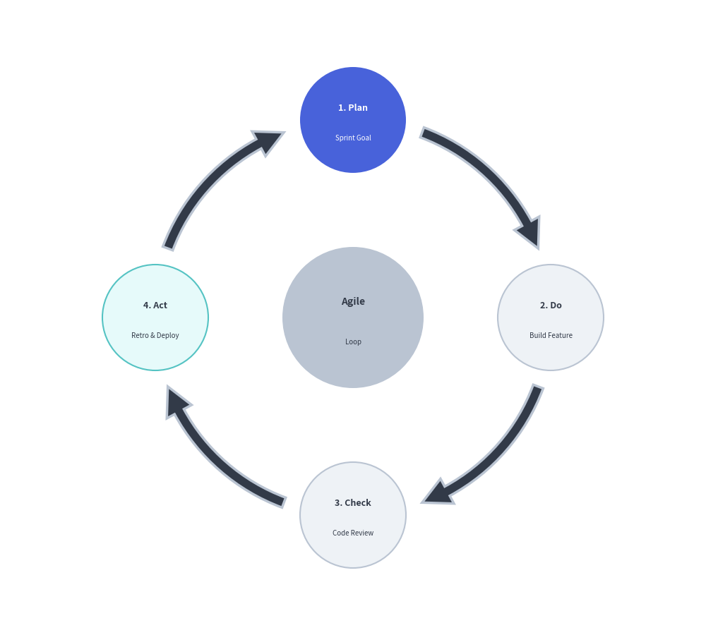

Cycle Component
The Cycle component draws circular, repeating process diagrams and continuous feedback loops.
It is ideally suited for Agile/Scrum iterations, PDCA DevOps lifecycles, incident response loops, and token refresh mechanisms.
1. Quick Example: Agile Development Cycle

2. Geometry & Coordinate Mechanics
- Center Anchor
(cx, cy): The coordinate passed todraw(xy=(cx, cy), radius=R)specifies the center hub of the orbit circle. - Equi-Angular Distribution: Steps are automatically spaced evenly along the orbit circumference: $$\theta_i = \text{start_angle} \mp \left(i \cdot \frac{360^\circ}{N}\right)$$
- Circular Arc Connectors: Steps are connected by curved block arrows (
arrow_type="arc"), direct lines ("line"), or no connectors ("none"). - Arrow Color Mode:
"match_source"(default): Each connector arrow adopts the theme color of its originating step."match_target": Connectors match the destination step color."monochrome": Connectors use a uniform line style (arrow_style).
3. Class API Reference
Constructor
Cycle(
*,
style: Style,
text_style: Style,
description_style: Style | None = None,
arrow_style: Style | None = None,
clockwise: bool = True,
start_angle: float = 90.0,
node_shape: Literal["circle", "rectangle", "none"] = "circle",
node_radius: float = 8.0,
node_size: tuple[float, float] = (18.0, 10.0),
description_placement: Literal["inside", "outside"] = "inside",
arrow_type: Literal["arc", "line", "none"] = "arc",
arrow_width: float = 2.0,
arrow_head_width: float = 4.5,
arrow_color_mode: Literal["monochrome", "match_source", "match_target"] = "match_source",
arrow_gap: float = 2.5,
center_text: str = "",
center_description: str = "",
center_radius: float = 10.0,
center_style: Style | None = None,
center_text_style: Style | None = None,
center_description_style: Style | None = None,
)
Adding Steps and Center Hub
append(text, *, description="", style=None, text_style=None, description_style=None, arrow_style=None):
Appends a step to the circular perimeter.extend(texts, *, styles=None, text_styles=None, descriptions=None, description_styles=None, arrow_styles=None):
Appends multiple steps with shared or per-item styles.set_center(text, *, description="", radius=None, style=None, text_style=None, description_style=None):
Adds an optional central focal node to create a radial cycle.
Drawing
draw(xy, radius=28.0):
Renders the circular cycle centered atxywith orbit radiusradius.